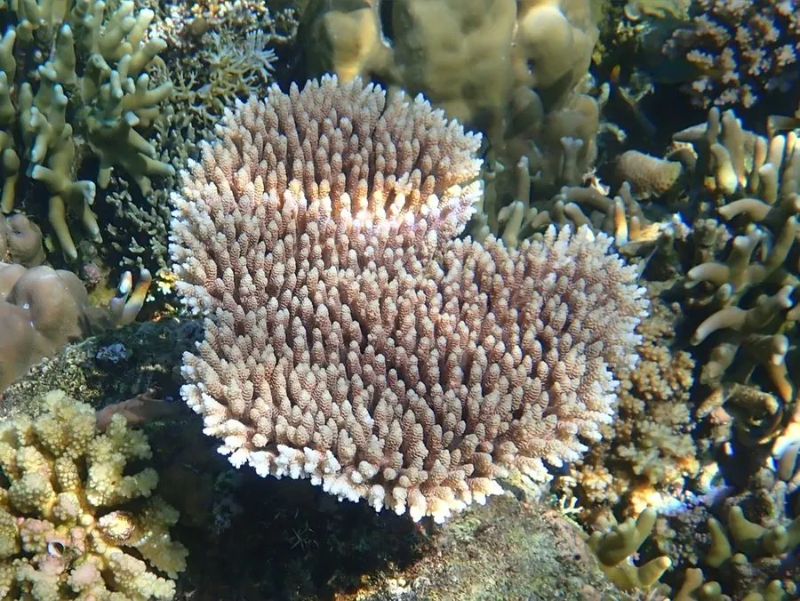

其他无脊椎动物 · 动物界
多孔鹿角珊瑚 Acropora millepora

印度洋—太平洋珊瑚礁的常见造礁珊瑚，分枝密集似鹿角，顶端呈淡蓝色或粉色，是众多珊瑚礁鱼类和小型无脊椎动物的庇护所。
- 分类
- 门刺胞动物门纲珊瑚纲目石珊瑚目科鹿角珊瑚科属鹿角珊瑚属
- 栖息环境
- 热带珊瑚礁的礁坪和礁坡上部，水深 0–15 米
- 地理分布
- 印度洋—太平洋热带海域，包括澳大利亚大堡礁和东南亚珊瑚礁
- 保护级别
- IUCN 近危（NT）；CITES 附录Ⅱ
物种志
多孔鹿角珊瑚的群体由密集的分枝组成，分枝粗短、向四周伸展，整体呈伞状或灌木状，直径可达 30–50 厘米。珊瑚虫细小，排列在分枝表面的小孔中，活体常呈淡蓝色、粉紫色、黄褐色或绿色，分枝顶端颜色较浅。
它广泛分布于印度洋—太平洋的浅海珊瑚礁，常见于礁坪和礁坡上部，水深 0–15 米，与体内虫黄藻共生，靠光合作用获得大部分营养，夜间伸出触手捕食浮游生物。繁殖多采用同步产卵，整个礁区的群体在同一夜晚释放精卵团，受精卵发育为浮浪幼虫后寻找硬底附着。它对海水升温非常敏感，热浪会导致虫黄藻流失而白化；作为造礁主力，它被列入 CITES 附录Ⅱ，也是珊瑚修复中常用的断枝移植物种。
形态与习性
- 形态分枝密集，群体直径可达 30–50 cm
- 共生与虫黄藻共生，靠光合作用获取营养
- 繁殖同步产卵，浮浪幼虫附着硬底发育
- 水深常见于 0–15 m 的礁坪和礁坡上部
- 白化海水升温会导致虫黄藻流失而白化
- 保护CITES 附录Ⅱ，贸易和采集受管制
趣味知识
- 多孔鹿角珊瑚常在同一个夜晚集体产卵，整个礁区像下了一场“珊瑚雪”。
- 断掉的珊瑚枝落回礁面后可以继续生长，因此常被用于珊瑚修复。
- 它的分枝尖端颜色最浅，那里是生长最快的部分。